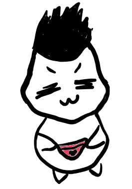
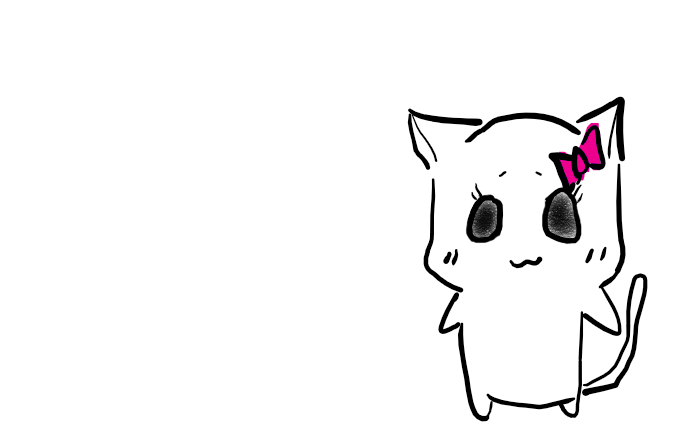

关于这个网站与我们
产生“做个网站”的想法已经有一年了，本想把它当做喵小姐21岁生日的礼物送给她，谁知道一拖整整拖了一年。（喵小姐画外音说不许算她年龄）其中因为各种事情拖延，知道后来看到一个Ted讲“没时间做的事只是因为有限度不够”，才狠心买了一整套网页编辑的教材学下去。
作为一个基本没有技术背景的文科生，学习过程感觉感觉就像是逼柯基爬楼梯，连滚带爬学了一阵，忽然发现这件事情的有趣和浪漫，再做下去才开始觉得享受。敲了50小时、1000多行代码，才写出眼前这个并不好看的网站，但他会越来越好看，我们需要有些耐心~
和喵小姐在一起后，至今为止，没想过有其他可能。虽然我们都是强势的人，也都有自己的性格和脾气，但那种契合感是令人惊讶的，甚至回头的时候，连她惹我生气的样子都可爱（虽然她并不这么觉得）。
喵小姐英文名字叫Lydia，我非常喜欢这个名字。当它是一个女孩儿的名字的时候她显得诗性而纯净；而当它代表希腊那个早已覆灭的古老城市时，它更显得浪漫而深沉。Onlydia是我一年前自创的词，是Only和Lydia的拼接，它很契合我的心境，我们都深爱它。
希望永远也不会有这样一天，我满怀无奈的，把这个网站撤下这个美丽的域名。
PS：关于网站底部banner……我在7月前结束了最后一段实习，现在回家，敲敲代码，做做家务（如图）；而喵小姐开始了她雅思老师的职业生涯，作为第一份正经实习，挣得比我这个混了好几年的老鸟还多！祝她职场得意啦，以上~

